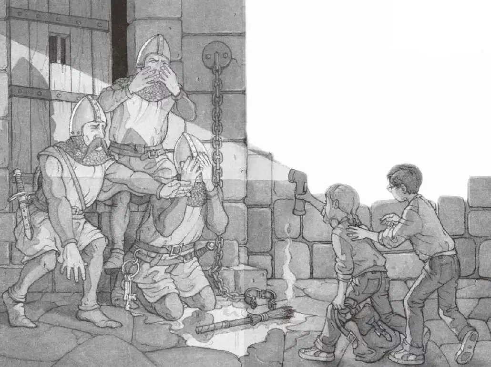

在火把的亮光下，杰克看见三个大块头男人。
眼睛斜得厉害的那个举着火把，脸膛红得发紫的那个揪着杰克，胡子留得很长的那个紧紧抓着安妮。
安妮又踢又嚷。
“休得无礼！”胡子留得很长的那个说。
“尔等何人？”脸膛红得发紫的那个说。
“密探？异邦人？埃及人？罗马人？波斯人？”斜眼睛的那个问。
“都不是，你们这些傻瓜！”安妮大喊。
“糟糕，坏事了。”杰克嘟囔道。
“把他们抓起来！”红脸膛叫道。
“关进地牢！”斜眼睛叫道。
三个卫兵押着杰克和安妮走出军械库，杰克焦急地扭头寻找自己的书包。
“快走！”一个卫兵说着推了他一把。杰克只好向前走去。
斜眼睛、安妮、长胡子、杰克和红脸膛走过长长的、黑乎乎的走廊，然后顺着一条弯曲、狭窄的楼梯盘旋而下。
杰克听见安妮在朝卫兵们大喊：“傻瓜！坏蛋！我们什么也没做！”
卫兵们哈哈大笑，他们根本不把安妮的话当回事。
楼梯的底部有一扇大铁门，中间横着一根棍子。
斜眼睛把棍子从门上移开，然后使劲地推那扇铁门。
铁门吱吱嘎嘎地打开了。
杰克和安妮被推进了一间冰冷而逼仄的牢房。
燃烧的火把照亮了这间地牢。
脏兮兮的墙上悬挂着铁链，水从天花板上滴落下来，在石头地上形成一个个水洼。
杰克从来没见过这么阴森恐怖的地方。
“先把他们关押在此，等宴会结束后，再把他们交给公爵大人。”斜眼睛说，“他知道如何处置窃贼。”
“明天有一场绞刑。”长胡子说。
“但愿老鼠没有先把他们咬死。”红脸膛说。
三个人哈哈大笑起来。

这时，杰克看见安妮正拿着他的书包，悄悄地把拉链拉开。
斜眼睛叫道：“快，把他们俩用链子拴起来。”
三个卫兵朝他们围过来，安妮猛地从包里抽出手电筒。
“看招！”她大喝一声。
卫兵们呆住了，他们惊讶地盯着安妮手里闪亮的手电筒。
安妮把手电筒拧开，卫兵们吓得往后一跳，退到了墙边，连气也不敢喘一口。
斜眼睛赶紧扔掉手里的火把。
火把落在地上一个肮脏的水坑里，扑闪了几下，熄灭了。
“看我的魔杖！”安妮边说边挥动着手电筒，“趴下，不然我就把你们统统干掉！”
杰克吃惊地张大了嘴巴。
安妮凶狠地把光柱对准斜眼睛，然后对准长胡子，接着对准红脸膛。
他们一个个连声号叫，惊恐地用手把脸捂住。
“趴下！统统趴下！快趴下！”安妮大喊。
卫兵们一个接一个地跪在了地上。
杰克简直不敢相信自己的眼睛。
安妮悄悄对杰克说：“快走，就现在。”
杰克看看敞开的牢门，又看看地上那几个颤抖的卫兵。
“快点儿！”安妮催促他。
杰克迅速一跃而起，跟着安妮离开了这间可怕的地牢。